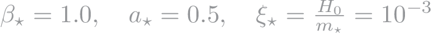
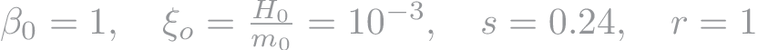
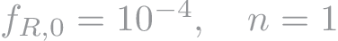
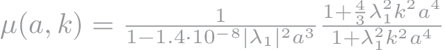
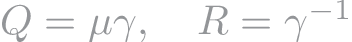
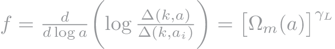

Examples
- Symmetron model implemented through the following parametrization and denoted in the code as model 7,
In the plots above the parameters used are:

- Generalized Dilaton model implemented through the following parametrization and denoted in the code as model 8,
In the plots above the parameters used are:

- Hu-Sawicki f(R) gravity introduced in arXiv:0705.1158. This model is introduced using the following parametrization and denoted in the code as model 9,
In the plots above the parameters used are:

- Dilaton model introduced through the following parametrization and denoted in the code as model 10,
In the plots above the parameters used are:
- BZ parametrization arXiv:0801.2431:
where specific parameter sets were introduced in arXiv:0809.3791 describing f(R) and Chameleon models.
- f(R): Setting β1 = 4/3, λ22 = β1 λ12 and β2 = 1/2 and

where λ12 = B0 c2 /(2H0 ) would describe f(R) models for B0 < 1 as explained in arXiv:0909.2045.
- Chameleon (Yukawa-type dark matter interaction): It is an
extension to Chameleon models introduced above. Setting
λ22 = β1 λ12
, β2 = 2/β1 -1 with 0 < B0 < 1, 0 < β1 < 2 and 1
< s < 4 gives the chameleon models considered in arXiv:0909.2045.
- Bean and Tangmatitham parametrization arXiv:1002.4197:
The parametrization is
where for late times, when anisotropic stress is small, we have

- Linder's γ parametrization ( γL): This is a commonly used
parameter defined as arXiv:0701317

where the scale dependence is neglected.